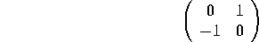
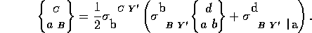

In REDTEN a spinor consists of two objects, the named primary object, and a conjugate whose index structure is obtained by swapping each unprimed spinor index for a primed spinor index, and the reverse. The conjugate is named by taking the primary's name and appending _cnj to it. Normally conjugate objects are also flagged nodir so that they do not appear in directory listings. The conjugate object never has explicit components, any reference to it results in a reference to the primary object and a conjugation of the input or output value. Note also that the index-runs of spinor indices are generally half that of the tensor indices, from 1 to 2 by default.
A very rudimentary package for spinors is included in REDTEN consisting of the following functions: spmetric(), spinmat(), and spchristoffel(). The spinor metric created by spmetric() comes in two parts: one metric for unprimed indices (index-type 3), and another for primed indices (index-type 4). Thus a total of four objects are created, as each metric is accompanied by its conjugate. The default names are e3 and e4. Currently, the spinor metrics are not the targets of generic names. This may change in future versions as the package develops. The spinor metrics have the form

i.e. they are anti-symmetric rank-2 objects.
The function spinmat() creates the spin-matrices associated with the current tensor metric; currently it can only do this for diagonal metrics. The spin matrices follow the usual naming convention: the tensor metric name, an underscore, and the generic name stored on spinmat. These objects are of type connection. The primary object has an index structure of (-1 3 4) and has a conjugate symmetry between the primed and unprimed indices.
The function spchristoffel() computes the Christoffel symbols via the equation:

The Christoffel symbol for the primed indices is obtained from the above through conjugation.